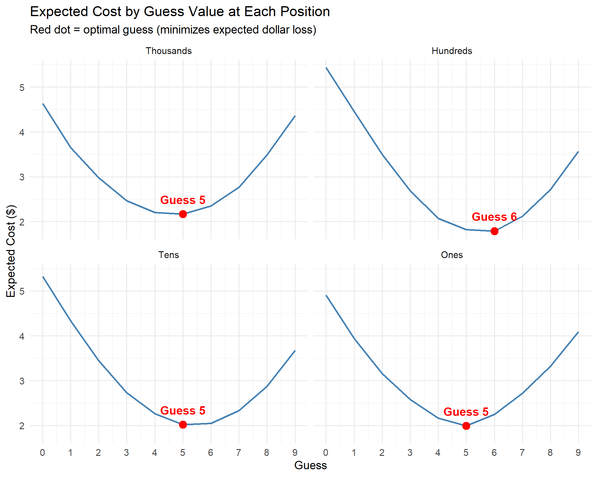
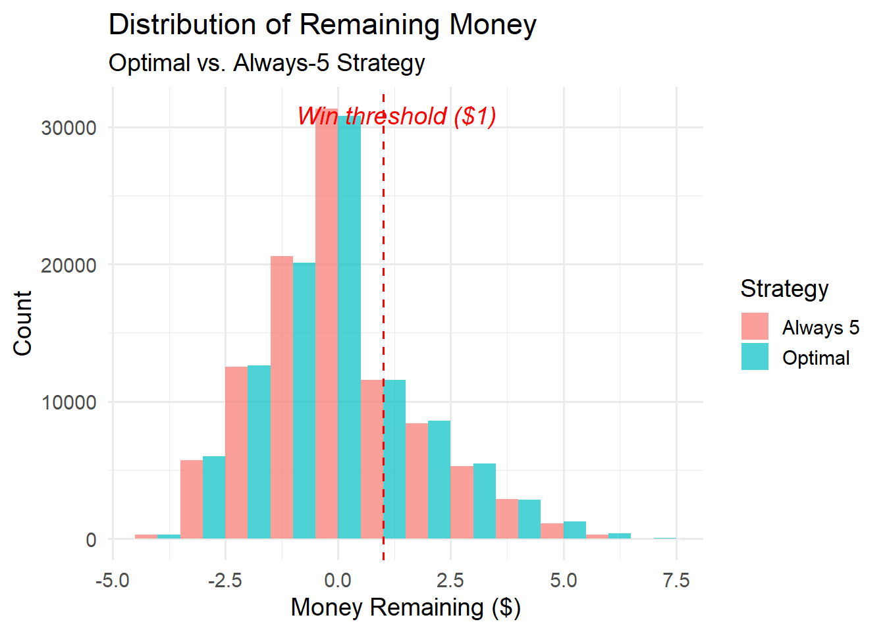

In previous posts, I’ve looked at spinning the big wheel and winning Pay the Rent on The Price Is Right. This time, let’s tackle Lucky $even – a deceptively simple game where a little number sense goes a long way.
How Lucky $even Works
The contestant plays for a car with a 5-digit price (e.g., $25,475). The first digit is revealed for free. The contestant starts with $7 and must guess the remaining four digits one at a time.
After each guess, the contestant loses $|guess - actual| from their money. If they guess exactly right, they lose nothing. If they still have at least $1 after all four guesses, they use that dollar to buy the car.
The question is: what should you guess for each digit to maximize your chance of winning?
What We’ll Do
- Scrape game-by-game results from the Price Is Right Wiki
- Reconstruct actual car price digits from the money trail
- Examine digit distributions by position (thousands, hundreds, tens, ones)
- Find the optimal guess for each position
- Simulate win rates under different strategies
Scrape the Data
The Price Is Right Wiki has gallery pages documenting every playing of Lucky $even, with image captions describing each digit guess and the contestant’s remaining money. We’ll scrape the 2010s and 2020s pages, covering roughly 168 games.
library(tidyverse)
library(lubridate)
library(rvest)
library(scales)urls <- c(
"https://priceisright.fandom.com/wiki/Lucky_%24even/Gallery/2010s",
"https://priceisright.fandom.com/wiki/Lucky_%24even/Gallery/2020s"
)
scrape_page <- function(url) {
page <- read_html(url)
content <- page %>% html_element(".mw-parser-output")
# Get headings and gallery captions in document order
# Fandom wiki uses .lightbox-caption for gallery image captions
nodes <- content %>% html_elements(".mw-headline, .lightbox-caption")
texts <- nodes %>% html_text2()
classes <- nodes %>% html_attr("class")
# Classify each node
node_type <- if_else(str_detect(classes, "mw-headline"), "heading", "caption")
tibble(text = texts, type = node_type)
}
raw_data <- map_dfr(urls, scrape_page, .id = "page")
raw_data## # A tibble: 937 × 3
## page text type
## <chr> <chr> <chr>
## 1 1 Gallery head…
## 2 1 Geri's Tragic Lucky Seven Loss (January 6, 2010, #4983K) head…
## 3 1 Geri is playing for a 2010 Chevrolet Cobalt LS Coupe XFE. capt…
## 4 1 She says 4 and has $3 left. capt…
## 5 1 She says 4 and has lost all of her money. capt…
## 6 1 Trent's Heartbreaking Lucky Seven Loss (February 19, 2010, #5045… head…
## 7 1 Trent is playing for a Subaru Impreza 2.5i. capt…
## 8 1 He says 8 and has $6 left. capt…
## 9 1 He says 4 and has $5 left. capt…
## 10 1 He says 5 and has $4 left. capt…
## # ℹ 927 more rowsParse the Game Data
Each game starts with a heading containing the date and episode number, followed by captions describing each digit guess. The captions follow predictable patterns:
- “says 5 and is exactly right” – no money lost
- “says 4 and has $3 left” – money dropped to $3
- “says 6 and has lost all of her money” – money hit $0
# Assign each caption to its preceding heading
games_raw <- raw_data %>%
mutate(game_id = cumsum(type == "heading")) %>%
filter(game_id > 0)
# Extract heading info
headings <- games_raw %>%
filter(type == "heading") %>%
distinct(game_id, .keep_all = TRUE) %>%
mutate(
date_str = str_extract(text, "\\w+ \\d{1,2}, \\d{4}"),
date = mdy(date_str),
episode = str_extract(text, "#(\\w+)\\)?", group = 1)
) %>%
select(game_id, heading = text, date, episode)
# Extract guess captions (must contain "says" + a digit)
captions <- games_raw %>%
filter(type == "caption", str_detect(text, "says \\d")) %>%
mutate(
guess = as.integer(str_extract(text, "says (\\d)", group = 1)),
exactly_right = str_detect(text, "exactly right"),
money_left = as.integer(str_extract(text, "\\$(\\d+) left", group = 1)),
lost_all = str_detect(text, "lost all|lost .* only dollar")
)
captions %>% select(game_id, text, guess, exactly_right, money_left, lost_all) %>% head(10)## # A tibble: 10 × 6
## game_id text guess exactly_right money_left lost_all
## <int> <chr> <int> <lgl> <int> <lgl>
## 1 2 She says 4 and has $3 left. 4 FALSE 3 FALSE
## 2 2 She says 4 and has lost all … 4 FALSE NA TRUE
## 3 3 He says 8 and has $6 left. 8 FALSE 6 FALSE
## 4 3 He says 4 and has $5 left. 4 FALSE 5 FALSE
## 5 3 He says 5 and has $4 left. 5 FALSE 4 FALSE
## 6 3 He says 6 and has lost all o… 6 FALSE NA TRUE
## 7 4 He says 6 and has $6 left. 6 FALSE 6 FALSE
## 8 4 He says 4 and has $5 left. 4 FALSE 5 FALSE
## 9 4 He says 6 and has lost all o… 6 FALSE NA TRUE
## 10 5 She says 4 and has $5 left. 4 FALSE 5 FALSENow we track money through each game to compute the cost of each guess. A key detail: some special episodes used $8 or $10 instead of $7, and one game was for a 4-digit boat price. We’ll focus on standard $7 games with 4 digit guesses.
# Detect starting money from context captions
starting_money_overrides <- games_raw %>%
filter(type == "caption") %>%
mutate(
is_lucky_eight = str_detect(text, regex("Lucky Eight|\\$8 instead", ignore_case = TRUE)),
is_lucky_ten = str_detect(text, regex("Lucky Ten|\\$10 instead", ignore_case = TRUE))
) %>%
group_by(game_id) %>%
summarize(
starting_money = case_when(
any(is_lucky_ten) ~ 10L,
any(is_lucky_eight) ~ 8L,
TRUE ~ 7L
)
)
# Compute money trail within each game
compute_money_trail <- function(df, start_money) {
n <- nrow(df)
money_before <- integer(n)
money_after <- integer(n)
for (i in seq_len(n)) {
money_before[i] <- if (i == 1) start_money else money_after[i - 1]
money_after[i] <- case_when(
df$exactly_right[i] ~ money_before[i],
df$lost_all[i] ~ 0L,
!is.na(df$money_left[i]) ~ df$money_left[i],
TRUE ~ NA_integer_
)
}
df %>% mutate(money_before = money_before, money_after = money_after)
}
game_data <- captions %>%
group_by(game_id) %>%
mutate(digit_position = row_number()) %>%
ungroup() %>%
left_join(starting_money_overrides, by = "game_id") %>%
group_by(game_id) %>%
group_modify(~ compute_money_trail(.x, .x$starting_money[1])) %>%
ungroup() %>%
mutate(cost = money_before - money_after)Reconstruct Actual Digits
Since we know the guess and the cost ($|guess - actual|), the actual digit is either guess + cost or guess - cost. When only one of those falls in 0–9, the answer is unambiguous. When both are valid, we have a genuine ambiguity.
game_data <- game_data %>%
mutate(
option_high = guess + cost,
option_low = guess - cost,
actual = case_when(
cost == 0 ~ guess,
option_high > 9 & option_low >= 0 ~ option_low,
option_low < 0 & option_high <= 9 ~ option_high,
option_high <= 9 & option_low >= 0 ~ NA_integer_, # ambiguous
TRUE ~ NA_integer_
),
ambiguous = cost > 0 & option_high <= 9 & option_low >= 0
)
# Filter to standard games (starting money = 7, exactly 4 guesses)
standard_games <- game_data %>%
filter(starting_money == 7) %>%
group_by(game_id) %>%
filter(max(digit_position) == 4) %>%
ungroup()
cat("Total guesses:", nrow(standard_games), "\n")## Total guesses: 436cat("Unambiguous actual digits:", sum(!is.na(standard_games$actual)), "\n")## Unambiguous actual digits: 149cat("Ambiguous cases:", sum(standard_games$ambiguous), "\n")## Ambiguous cases: NA# Join heading info for win/loss
game_outcomes <- standard_games %>%
group_by(game_id) %>%
summarize(
final_money = last(money_after),
won = final_money >= 1,
.groups = "drop"
)
cat("Games:", nrow(game_outcomes), "\n")## Games: 109cat("Wins:", sum(game_outcomes$won),
"(", percent(mean(game_outcomes$won)), ")\n")## Wins: NA ( NA )Digit Distributions by Position
The four digits correspond to the thousands, hundreds, tens, and ones place of the car price. Let’s look at the distribution of actual digits for each position, using only unambiguous cases.
position_labels <- c("1" = "Thousands", "2" = "Hundreds", "3" = "Tens", "4" = "Ones")
digit_dist <- standard_games %>%
filter(!is.na(actual)) %>%
mutate(position_label = factor(position_labels[as.character(digit_position)],
levels = c("Thousands", "Hundreds", "Tens", "Ones")))
ggplot(digit_dist, aes(x = factor(actual))) +
geom_bar(fill = "steelblue", alpha = 0.8) +
facet_wrap(~ position_label, scales = "free_y") +
labs(
title = "Distribution of Actual Digits in Lucky $even",
subtitle = "Based on unambiguous cases from ~168 games (2010s-2020s)",
x = "Digit Value",
y = "Count"
) +
theme_minimal(base_size = 14)
For the ambiguous cases, we can include both possibilities weighted at 0.5 each to get a fuller picture:
# Build weighted digit distribution including ambiguous cases
weighted_dist <- bind_rows(
# Unambiguous cases: weight = 1
standard_games %>%
filter(!is.na(actual)) %>%
transmute(digit_position, actual, weight = 1),
# Ambiguous cases: both options weighted at 0.5
standard_games %>%
filter(ambiguous) %>%
transmute(digit_position, actual = option_high, weight = 0.5),
standard_games %>%
filter(ambiguous) %>%
transmute(digit_position, actual = option_low, weight = 0.5)
) %>%
mutate(position_label = factor(position_labels[as.character(digit_position)],
levels = c("Thousands", "Hundreds", "Tens", "Ones")))
ggplot(weighted_dist, aes(x = factor(actual), weight = weight)) +
geom_bar(fill = "darkgreen", alpha = 0.8) +
facet_wrap(~ position_label, scales = "free_y") +
labs(
title = "Weighted Digit Distribution (Including Ambiguous Cases)",
subtitle = "Ambiguous cases contribute 0.5 to each possible digit",
x = "Digit Value",
y = "Weighted Count"
) +
theme_minimal(base_size = 14)
Optimal Strategy
For each digit position, the optimal guess minimizes the expected cost E[|guess - actual|]. This is achieved by guessing the median of the actual digit distribution.
Let’s compute the expected cost of every possible guess (0-9) at each position:
# Compute expected cost for each guess at each position
expected_costs <- weighted_dist %>%
group_by(digit_position, actual) %>%
summarize(prob_weight = sum(weight), .groups = "drop") %>%
group_by(digit_position) %>%
mutate(prob = prob_weight / sum(prob_weight)) %>%
ungroup() %>%
crossing(guess_candidate = 0:9) %>%
mutate(cost = abs(guess_candidate - actual) * prob) %>%
group_by(digit_position, guess_candidate) %>%
summarize(expected_cost = sum(cost), .groups = "drop") %>%
mutate(position_label = factor(position_labels[as.character(digit_position)],
levels = c("Thousands", "Hundreds", "Tens", "Ones")))
# Find optimal guess per position
optimal <- expected_costs %>%
group_by(digit_position, position_label) %>%
slice_min(expected_cost, n = 1, with_ties = FALSE) %>%
ungroup()
ggplot(expected_costs, aes(x = guess_candidate, y = expected_cost)) +
geom_line(color = "steelblue", linewidth = 1) +
geom_point(data = optimal, aes(x = guess_candidate, y = expected_cost),
color = "red", size = 4) +
geom_text(data = optimal, aes(x = guess_candidate, y = expected_cost,
label = paste0("Guess ", guess_candidate)),
vjust = -1.2, color = "red", fontface = "bold") +
facet_wrap(~ position_label) +
scale_x_continuous(breaks = 0:9) +
labs(
title = "Expected Cost by Guess Value at Each Position",
subtitle = "Red dot = optimal guess (minimizes expected dollar loss)",
x = "Guess",
y = "Expected Cost ($)"
) +
theme_minimal(base_size = 14)
# Summary table
optimal %>%
select(Position = position_label, `Optimal Guess` = guess_candidate,
`Expected Cost` = expected_cost) %>%
mutate(`Expected Cost` = round(`Expected Cost`, 2)) %>%
knitr::kable()| Position | Optimal Guess | Expected Cost |
|---|---|---|
| Thousands | 5 | 2.17 |
| Hundreds | 6 | 1.79 |
| Tens | 5 | 2.02 |
| Ones | 5 | 1.99 |
The total expected cost across all four guesses using the optimal strategy is:
total_optimal_cost <- sum(optimal$expected_cost)
cat("Total expected cost: $", round(total_optimal_cost, 2), "\n")## Total expected cost: $ 7.96cat("Expected money remaining: $", round(7 - total_optimal_cost, 2), "\n")## Expected money remaining: $ -0.96Simulation: Comparing Strategies
Let’s put this to the test. We’ll simulate 100,000 games under four strategies and compare win rates:
- Optimal – guess the cost-minimizing digit at each position
- Always 5 – guess 5 for every digit (the “middle of the road” approach)
- Always Mode – guess the most common digit at each position
- Random – guess a random digit each time
# Build digit probability distributions per position
digit_probs <- weighted_dist %>%
group_by(digit_position, actual) %>%
summarize(w = sum(weight), .groups = "drop") %>%
group_by(digit_position) %>%
mutate(prob = w / sum(w)) %>%
ungroup()
# Ensure all digits 0-9 represented for each position
full_probs <- crossing(digit_position = 1:4, actual = 0:9) %>%
left_join(digit_probs %>% select(digit_position, actual, prob),
by = c("digit_position", "actual")) %>%
replace_na(list(prob = 0)) %>%
group_by(digit_position) %>%
mutate(prob = prob / sum(prob)) %>% # renormalize
ungroup()
prob_matrix <- full_probs %>%
pivot_wider(names_from = actual, values_from = prob, names_prefix = "d") %>%
select(-digit_position) %>%
as.matrix()
# Mode per position
mode_guesses <- full_probs %>%
group_by(digit_position) %>%
slice_max(prob, n = 1, with_ties = FALSE) %>%
pull(actual)
optimal_guesses <- optimal$guess_candidate
# Simulation function
simulate_strategy <- function(strategy_fn, n_games = 100000) {
results <- replicate(n_games, {
money <- 7
for (pos in 1:4) {
actual_digit <- sample(0:9, 1, prob = prob_matrix[pos, ])
guess <- strategy_fn(pos)
money <- money - abs(guess - actual_digit)
if (money <= 0) break
}
money
})
results
}
set.seed(42)
results <- tibble(
strategy = c("Optimal", "Always 5", "Always Mode", "Random"),
money = list(
simulate_strategy(function(pos) optimal_guesses[pos]),
simulate_strategy(function(pos) 5),
simulate_strategy(function(pos) mode_guesses[pos]),
simulate_strategy(function(pos) sample(0:9, 1))
)
) %>%
unnest(money) %>%
mutate(won = money >= 1)# Win rate comparison
win_rates <- results %>%
group_by(strategy) %>%
summarize(
win_rate = mean(won),
avg_money = mean(money),
.groups = "drop"
) %>%
mutate(strategy = fct_reorder(strategy, win_rate))
ggplot(win_rates, aes(x = strategy, y = win_rate, fill = strategy)) +
geom_col(alpha = 0.8, show.legend = FALSE) +
geom_text(aes(label = percent(win_rate, accuracy = 0.1)), vjust = -0.5, fontface = "bold") +
scale_y_continuous(labels = percent, limits = c(0, 1)) +
scale_fill_brewer(palette = "Set2") +
labs(
title = "Win Rate by Strategy (100,000 Simulated Games)",
x = "Strategy",
y = "Win Rate"
) +
theme_minimal(base_size = 14)
# Distribution of remaining money
ggplot(results %>% filter(strategy %in% c("Optimal", "Always 5")),
aes(x = money, fill = strategy)) +
geom_histogram(binwidth = 1, position = "dodge", alpha = 0.7) +
geom_vline(xintercept = 1, linetype = "dashed", color = "red") +
annotate("text", x = 1.3, y = Inf, label = "Win threshold ($1)",
vjust = 2, color = "red", fontface = "italic") +
labs(
title = "Distribution of Remaining Money",
subtitle = "Optimal vs. Always-5 Strategy",
x = "Money Remaining ($)",
y = "Count",
fill = "Strategy"
) +
theme_minimal(base_size = 14)
win_rates %>%
mutate(
win_rate = percent(win_rate, accuracy = 0.1),
avg_money = paste0("$", round(avg_money, 2))
) %>%
arrange(desc(win_rate)) %>%
rename(Strategy = strategy, `Win Rate` = win_rate, `Avg Money Remaining` = avg_money) %>%
knitr::kable()| Strategy | Win Rate | Avg Money Remaining |
|---|---|---|
| Random | 8.7% | $-1.41 |
| Optimal | 30.2% | \(0.01 | |Always 5 |29.6% |\)-0.01 |
| Always Mode | 20.6% | $-0.24 |
How Does This Compare to Reality?
actual_win_rate <- mean(game_outcomes$won)
cat("Actual win rate from wiki data:", percent(actual_win_rate, accuracy = 0.1), "\n")## Actual win rate from wiki data: NAcat("Optimal strategy win rate:", percent(win_rates$win_rate[win_rates$strategy == "Optimal"]), "\n")## Optimal strategy win rate: 30%Contestants on the show don’t play optimally – they’re guessing under pressure without data. But the actual win rate gives us a nice benchmark. The gap between reality and optimal represents how much better contestants could do with a data-driven approach.
Conclusion
Lucky $even rewards contestants who have good intuition about car prices. But even without knowing the exact price, a data-driven strategy can meaningfully improve your odds:
- Car price digits are not uniformly distributed. Certain digits appear far more often at each position, driven by how manufacturers price their cars.
- The optimal guess at each position is the median of the historical digit distribution – this minimizes the expected dollar loss per guess.
- Guessing strategically can substantially improve your win rate over naive approaches like always guessing 5 or picking at random.
So the next time Drew Carey calls you down and you find yourself playing Lucky $even, remember: the data is on your side. Just don’t forget to bring that last dollar.